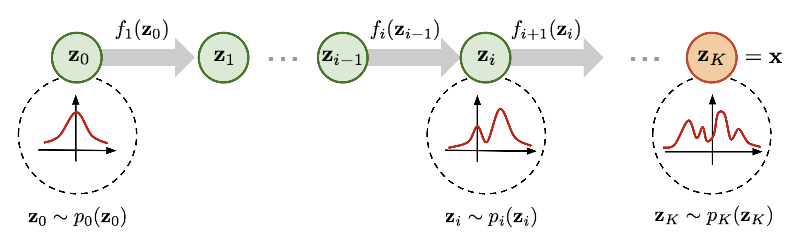
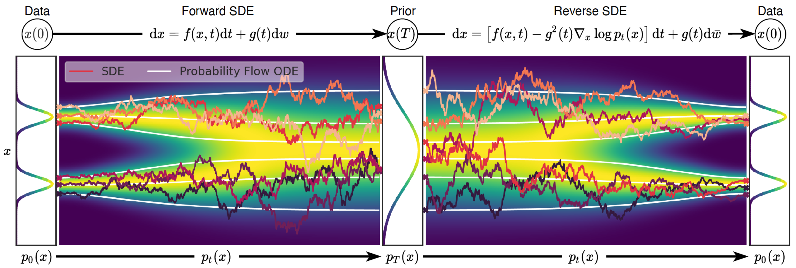

name: inverse layout: true class: center, middle, inverse --- # Flow with the World Author: .yellow[Cuiem] [[Index](../../index.html)] [[16:9](20240927_16_9.html)] .footnote[Supported by [Remark](https://github.com/gnab/remark)] --- layout: false # Agenda ### 1. What is Flow Model? ### 2. Why Flow Model? ### 3. Latest Work --- template: inverse # What is Flow Model? --- .left-column[ ## What is Flow Model? ### - [Generative Model](image.png) ] .right-column[ ### 1. Autoregressive Model Using parameterized functions (e.g., logistic regression above) to predict next pixel given all the previous ones. ### 2. VAE Latent Variable Model; Max log-likelihood; ELBO. ### 3. GAN Discriminator model; Generator model; Minimax game. ### 4. Flow-based Model Latent Variable Model; <em>Invertible</em> transformations. ### 5. Diffusion Markov Chain; Non-equilibrium thermodynamics ] --- .left-column[ ## What is Flow Model? ### - Generative Models ### - Flow Model ] .right-column[ A normalizing flow transforms a simple distribution into a complex one by applying a sequence of invertible transformation functions. Flowing through a chain of transformations, we repeatedly substitute the variable for the new one and eventually obtain a probability distribution of the final target variable. <center> <p></p> </center> #### ---> Autoregressive Flows ``` If a flow transformation in a normalizing flow is framed as an autoregressive model — each dimension in a vector variable is conditioned on the previous dimensions — this is an autoregressive flow. ``` ] --- template: inverse # Why Flow Model? --- ## Why Flow Model? ### - Stable Diffusion 3 Stable Diffusion 3 employs a .blue[Rectified Flow (RF)] formulation where data and noise are connected on a linear trajectory during training. This results in straighter inference paths, which then allow sampling with fewer steps. <center> <p></p> </center> .footnote[.red[*]Research Paper can be found [here](https://arxiv.org/pdf/2403.03206)] --- template: inverse # Latest Work --- ## Latest Work - ### TransFusion Check My log [here](../../GenerativeModel/GmPaperReading/TransFusion/tf.html). - ### DreamFusion Check my log [here](../../GenerativeModel/GmPaperReading/DreamFusion/df.html). - ### Idea Using Flow model instead of Diffusion Model. --- template: inverse #Thank You! [[Index](../../index.html)]